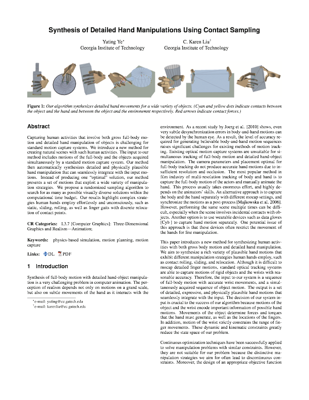
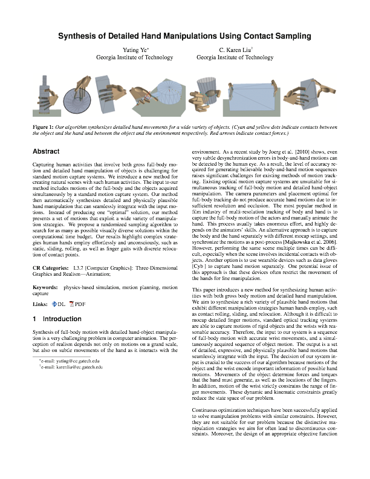

Abstract
Capturing human activities that involve both gross full-body motion and detailed hand manipulation of objects is challenging for standard motion capture systems. We introduce a new method for creating natural scenes with such human activities. The input to our method includes motions of the full-body and the objects acquired simultaneously by a standard motion capture system. Our method then automatically synthesizes detailed and physically plausible hand manipulation that can seamlessly integrate with the input motions. Instead of producing one "optimal" solution, our method presents a set of motions that exploit a wide variety of manipulation strategies. We propose a randomized sampling algorithm to search for as many as possible visually diverse solutions within the computational time budget. Our results highlight complex strategies human hands employ effortlessly and unconsciously, such as static, sliding, rolling, as well as finger gaits with discrete relocation of contact points.
Paper
 


Yuting Ye, C. Karen Liu
ACM Trans. Graph. (SIGGRAPH 2012) 31(4), Article 41.
Acknowledgements
We are thankful to Sehoon Ha for the help with motion capture and to Yuting Gu for her effort in Maya modeling and rendering. We would also like to thank Victor Zordan for his valuable suggestions. This work was supported by NSF CAREER award CCF 0742303 and Alfred P. Sloan Fellowship.